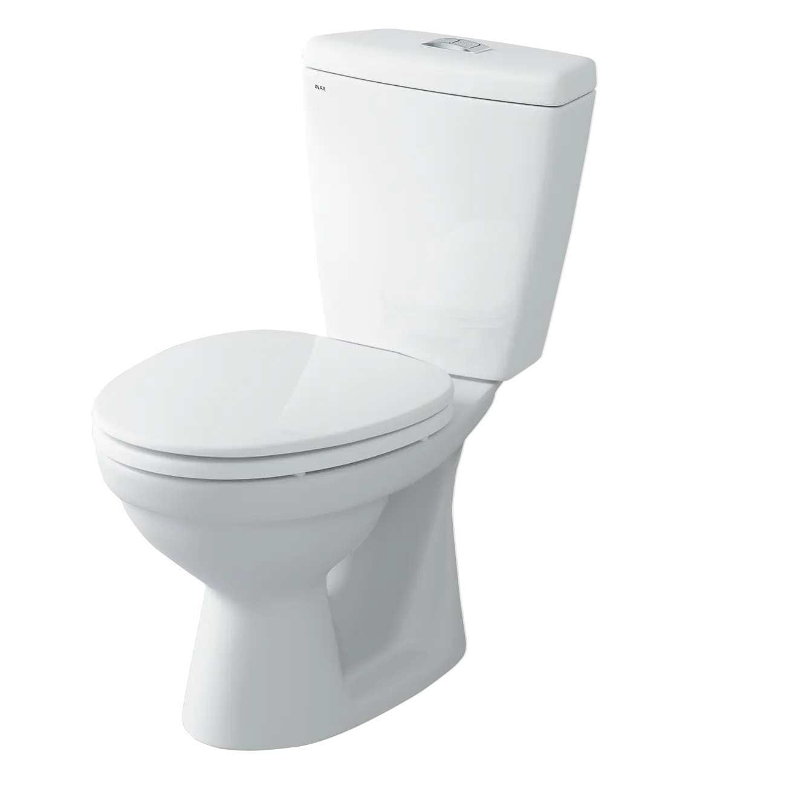
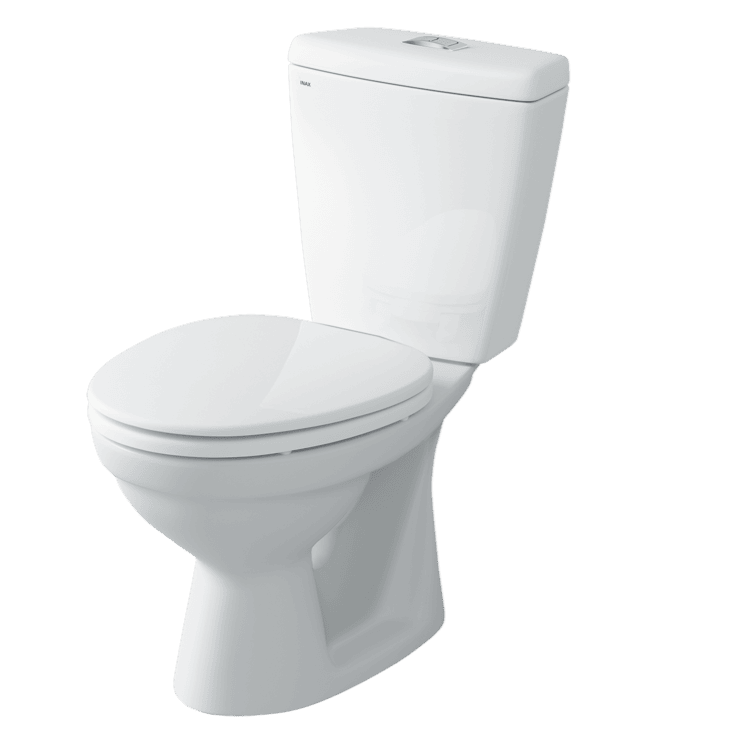
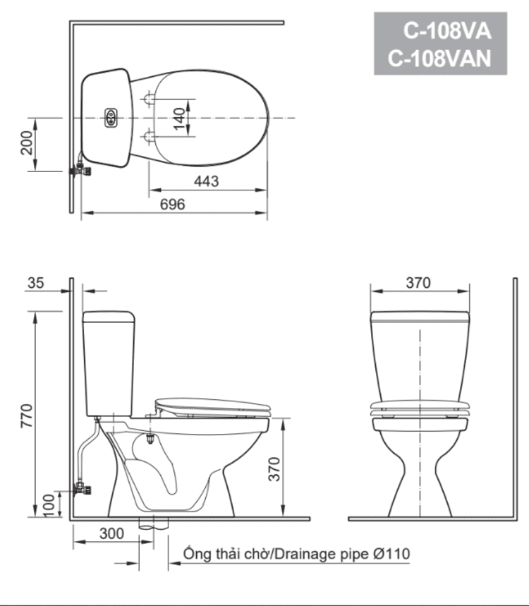

Bồn cầu INAX C-108VA sở hữu kiểu dáng 2 khối với kích thước tổng thể 680 x 370 x 770 (mm), giúp tối ưu không gian phòng tắm có diện tích hạn chế mà vẫn đảm bảo sự hài hòa về mặt thẩm mỹ. Với tông màu trắng chủ đạo, sản phẩm tương thích với hầu hết phong cách nội thất, tạo vẻ đẹp trang nhã và thanh lịch cho không gian nhà tắm. Ngoài ra, sản phẩm còn có các lựa chọn màu sắc khác như Kem và Xanh để đáp ứng đa dạng sở thích thiết kế.Đặc điểm nổi bật của bồn cầu 2 khối C-108VANắp đóng thường CS37AKV cứng cáp, đảm bảo độ bền bỉ và sự chắc chắn trong suốt quá trình vận hành.Công nghệ ECO 4.5 siêu tiết kiệm nước, ứng dụng kỹ thuật xả rửa hiện đại giúp tối ưu hóa lượng nước sử dụng, thân thiện với môi trường.Hệ thống xả kép với nút nhấn 2 chức năng, cho phép lựa chọn mức xả 4.8L hoặc 4.5L cho xả đại và 3.0L cho xả tiểu tùy theo nhu cầu thực tế.Kỹ thuật xả xoáy bước lòng bầu, kết hợp hệ thống xả thẳng mạnh mẽ và ống thoát đứng, đảm bảo cuốn trôi mọi chất bẩn một cách hiệu quả.Thiết kế nhỏ gọn, tối ưu, là giải pháp lý tưởng cho các phòng tắm có diện tích nhỏ hẹp mà vẫn mang lại đầy đủ tiện nghi.Để tạo nên không gian phòng tắm đồng bộ và đẳng cấp, khách hàng có thể kết hợp bồn cầu 2 khối INAX C-108VA với các dòng chậu rửa lavabo cùng thương hiệu INAX.Video giới thiệu công nghệ Aqua Ceramic độc quyền của INAXBản vẽ bồn cầu 2 khối C-108VAFile hướng dẫn lắp đặt bồn cầu C-108VAThông số kỹ thuậtChất liệuSứ cao cấpKiểu dáng2 khốiKích thước680 x 370 x 770 (mm) (Dài x Rộng x Cao)Thương hiệuINAXThiết kế- Nắp đóng thường cứng cáp CS37AKV, bền bỉ theo thời gian - Hệ thống xả nhấn 2 nút riêng biệt dễ thao tác, cấu trúc ống thoát đứng tiêu chuẩn - Kiểu dáng nhỏ gọn, đặc biệt phù hợp cho không gian nhỏ và có diện tích hẹpTính năng- Hai mức xả nhấn tiết kiệm nước tối ưu: 4.8L (đại) / 3.0L (tiểu) - Hệ thống xả thẳng kết hợp kỹ thuật xả xoáy bước lòng bầu mạnh mẽ, quét sạch mọi vết bẩnMàu sắcTrắngKhác- Lưu ý: Sản phẩm chưa bao gồm van chặn nước A-703-4 - Hotline tư vấn và bảo hành: 18006633
Bồn cầu 2 khối C-108VA
Bàn cầu thương hiệu INAX.
Đã cập nhật danh sách yêu thích.
DANH MỤC: Bàn cầu
MÃ SẢN PHẨM: C-108VA
DEPTH: 770mm
HEIGHT: 696mm
WIDTH: 370mm
Bồn cầu INAX C-108VA sở hữu kiểu dáng 2 khối với kích thước tổng thể 680 x 370 x 770 (mm), giúp tối ưu không gian phòng tắm có diện tích hạn chế mà vẫn đảm bảo sự hài hòa về mặt thẩm mỹ. Với tông màu trắng chủ đạo, sản phẩm tương thích với hầu hết phong cách nội thất, tạo vẻ đẹp trang nhã và thanh lịch cho không gian nhà tắm. Ngoài ra, sản phẩm còn có các lựa chọn màu sắc khác như Kem và Xanh để đáp ứng đa dạng sở thích thiết kế.Đặc điểm nổi bật của bồn cầu 2 khối C-108VANắp đóng thường CS37AKV cứng cáp, đảm bảo độ bền bỉ và sự chắc chắn trong suốt quá trình vận hành.Công nghệ ECO 4.5 siêu tiết kiệm nước, ứng dụng kỹ thuật xả rửa hiện đại giúp tối ưu hóa lượng nước sử dụng, thân thiện với môi trường.Hệ thống xả kép với nút nhấn 2 chức năng, cho phép lựa chọn mức xả 4.8L hoặc 4.5L cho xả đại và 3.0L cho xả tiểu tùy theo nhu cầu thực tế.Kỹ thuật xả xoáy bước lòng bầu, kết hợp hệ thống xả thẳng mạnh mẽ và ống thoát đứng, đảm bảo cuốn trôi mọi chất bẩn một cách hiệu quả.Thiết kế nhỏ gọn, tối ưu, là giải pháp lý tưởng cho các phòng tắm có diện tích nhỏ hẹp mà vẫn mang lại đầy đủ tiện nghi.Để tạo nên không gian phòng tắm đồng bộ và đẳng cấp, khách hàng có thể kết hợp bồn cầu 2 khối INAX C-108VA với các dòng chậu rửa lavabo cùng thương hiệu INAX.Video giới thiệu công nghệ Aqua Ceramic độc quyền của INAXBản vẽ bồn cầu 2 khối C-108VAFile hướng dẫn lắp đặt bồn cầu C-108VAThông số kỹ thuậtChất liệuSứ cao cấpKiểu dáng2 khốiKích thước680 x 370 x 770 (mm) (Dài x Rộng x Cao)Thương hiệuINAXThiết kế- Nắp đóng thường cứng cáp CS37AKV, bền bỉ theo thời gian - Hệ thống xả nhấn 2 nút riêng biệt dễ thao tác, cấu trúc ống thoát đứng tiêu chuẩn - Kiểu dáng nhỏ gọn, đặc biệt phù hợp cho không gian nhỏ và có diện tích hẹpTính năng- Hai mức xả nhấn tiết kiệm nước tối ưu: 4.8L (đại) / 3.0L (tiểu) - Hệ thống xả thẳng kết hợp kỹ thuật xả xoáy bước lòng bầu mạnh mẽ, quét sạch mọi vết bẩnMàu sắcTrắngKhác- Lưu ý: Sản phẩm chưa bao gồm van chặn nước A-703-4 - Hotline tư vấn và bảo hành: 18006633
DANH MỤC: Bàn cầu
MÃ SẢN PHẨM: C-108VA
DEPTH: 770mm
HEIGHT: 696mm
WIDTH: 370mm